Of course, the first thing to do in Parga is check out its amazing beaches that are part of the reason for its popularity. The beaches around Parga are well known
for being some of the most beautiful and exotic out there and it's worth seeing them with your own eyes. Here's some information about some of the most popular, but
while do make sure to visit these, try to also go exploring on your own, because there are so many wild and not so well known places around Parga and who knows, you might
find your own little piece of paradise.
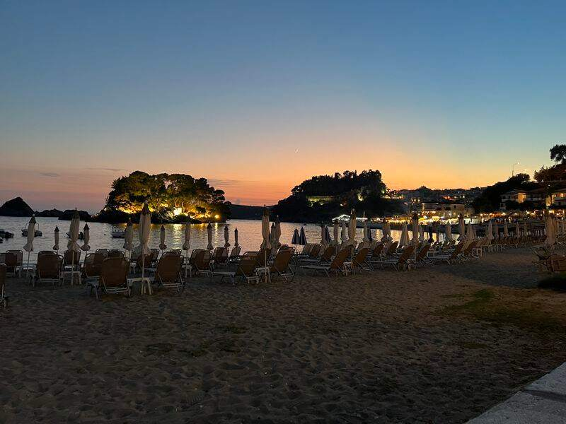
Parga Town Beach
Conveniently within walking distance of the centre of Parga, you can't miss this one. The town beach is not extremely wide, being just a strip of sand right where the town meets the sea.
However, it still offers a nice view of the islet of Virgin Mary right in front and has all the tourist amenities needed. A walk along the waterfront close to the beach is part of the daily routine of both locals
and tourists staying at one of the many accommodation options in town.
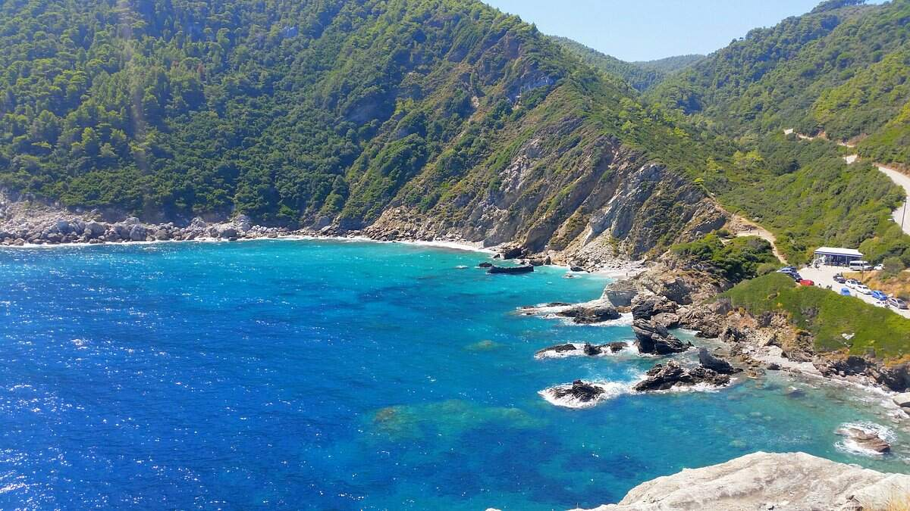
Agios Ioannis Beach
This one is a little bit more spectacular, being surrounded by rocky mountains and low cliffs. It is a small, beautiful beach whose white sands and crystal waters will leave you mesmerized, located
at about 6 km from the town of Parga. Locals will call it Ai-Giannakis.
Here's an important tip if you plan on going there: the sea floor at the Agios Ioannis beach is pretty rocky so you might want to consider bringing a pair of aqua shoes or buying one once you get there.
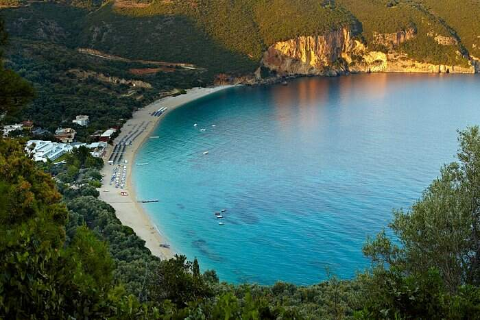
Lichnos Beach
The beach of Lichnos is placed 4 km to the south of Parga. It is one of the most beautiful beaches in Epirus, where the deep blue water gets combined with the green of the olive trees, all in the same environment.
You will find some good cafes and taverns in Lichnos beach, which offer delicious meals and work all day. As there is no nightlife on this beach, tranquil walks in the nightfall are recommended.
The sights and attractions of Parga
Take some time to get to know some of the sights of Parga while you're taking a break from sunbathing!
The Venetian Castle
The main thing that will catch your eye when arriving in Parga is the Venetian Castle, perched on top of a hill overlooking the town.
The location of this castle obviously provides magnificent views over Parga and the shoreline. It is also a peaceful area to go for a walk, surrounded by cypress trees and crossed by stone trails.
There is a cafeteria inside the castle that offers drinks and snacks, in case you get tired, as well as some interesting gift shops to buy souvenirs. The most common way to go is a steep street coming out from the center of the town.
In case you're interested, here's some of the history behind the main sight of Parga: it was initially built in the 11th century by the residents of Parga to protect their town from the pirates and the Turks but it was partly destroyed by such invasions.
In the 13th century, the Venetians rebuilt the castle to fortify the area. In 1452, Parga was occupied by the Turks and destroyed part of the Castle.
Then, in the 16th century, it was rebuilt for the fourth time by the Venetians, who made it a strong fortress. They built eight towers outside the Castle and two cisterns to supply the Castle with water in times of war. When, the Castle, as the whole town, was sold to the Turks in 1813, it was fortified even more and obtained a new building called hammam at its top, where the harem of the Sultan would live.
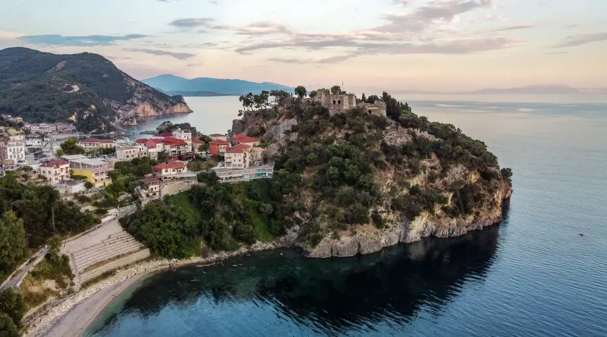
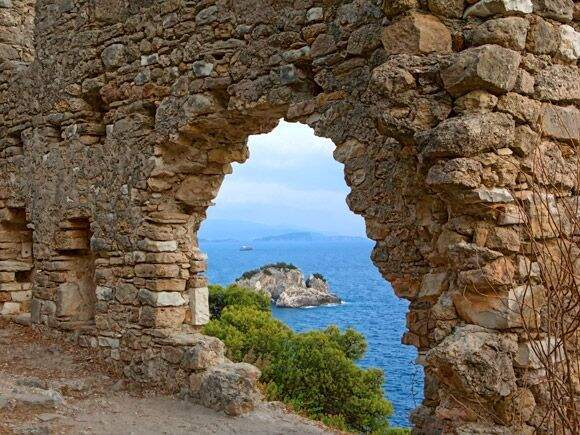
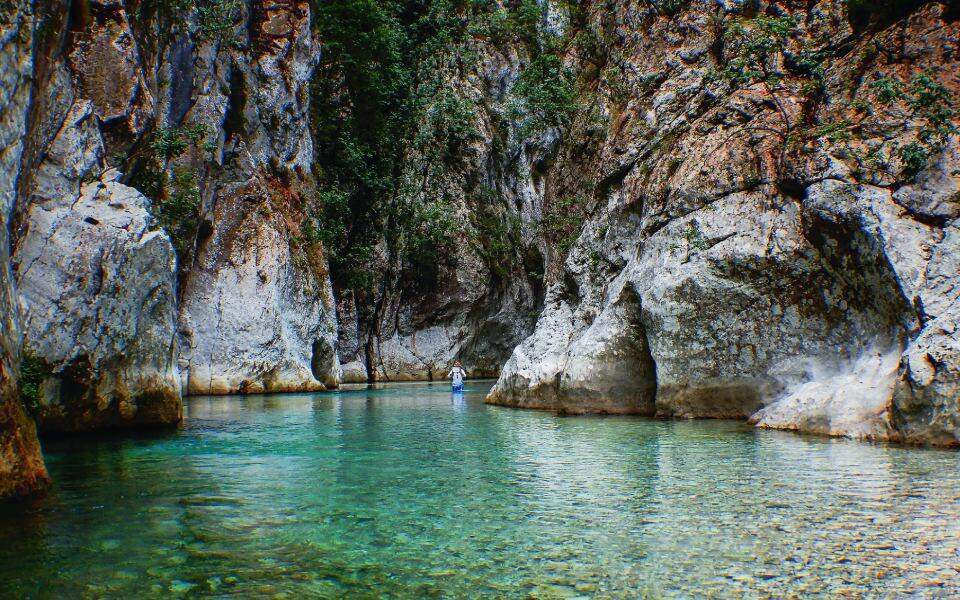
Acheron River
The springs of Acheron River is an area of outstanding natural beauty located at the border of Thesprotia and Preveza, close to the villages of Kanalaki and Glyki. Apart from the natural beauty, the springs of Acheron are known worldwide for their mythological significance. In ancient Greek mythology, Acheron was one of the five rivers of the Greek underworld.
Acheron River comprises a fantastic short trip for its magnificent transparent water and the surrounding rocky landscape. It is actually one of the least known places in Parga thus it retains its unspoiled natural beauty and secret energy. It flows from the mountains of Souli Epirus and after a long way, it reaches the Ionian Sea in Ammoudia beach.
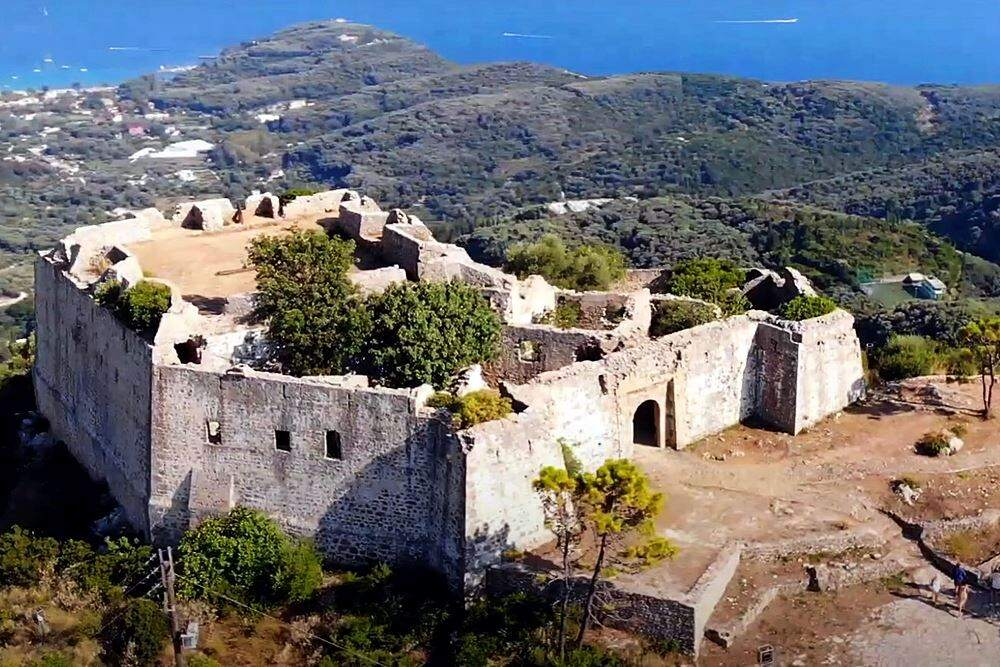
Castle of Anthousa
The impressive Castle of Anthoussa is located on top of a hill between Parga and Agia. This castle is preserved in good condition until today and dominates the entire region. It was constructed by Ali Pasha, the Turkish governor of Ioannina, to overlook the area, the sea and most of the town of Parga. It served as a base of operations against the residents of Parga, who were resisting against the Ottoman attacks.
In summer, the castle is used for cultural events and it is rather impressive with the night lights. A lovely hiking path starts from the Castle of Anthoussa until the beach of Valtos, passing through lush greenery, running water and old watermills. The view to the green region and the sea from the top of the castle is superb.
Bars and restaurants in Parga
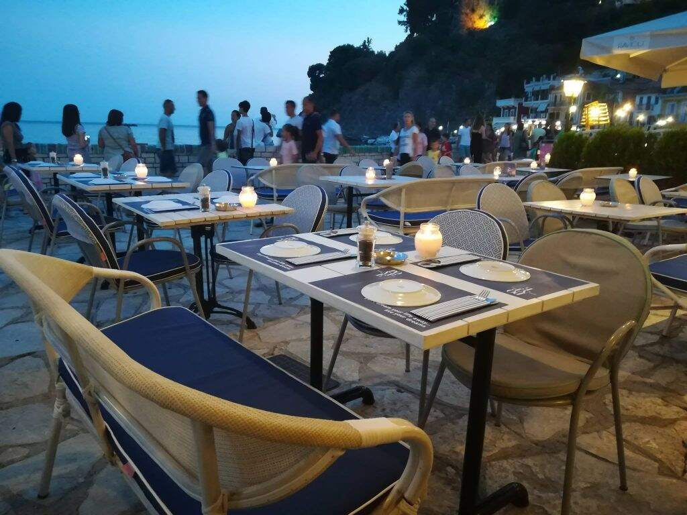
Ponte Restaurant
Location: Town
The Ponte Restaurant is located right in town and offers an ideal view of the sea and the harbour. Picture this: you're enjoying a cocktail with some excellent fresh seafood or some of the other mediterranean specialties available here, while watching the waves splash against the islet of Parga.
If this sounds good, you're bound to love Ponte! They serve breakfast, lunch and dinner and have an extensive menu with vegetarian and vegan options as well. On top of all this, they are also accessible in terms of prices!
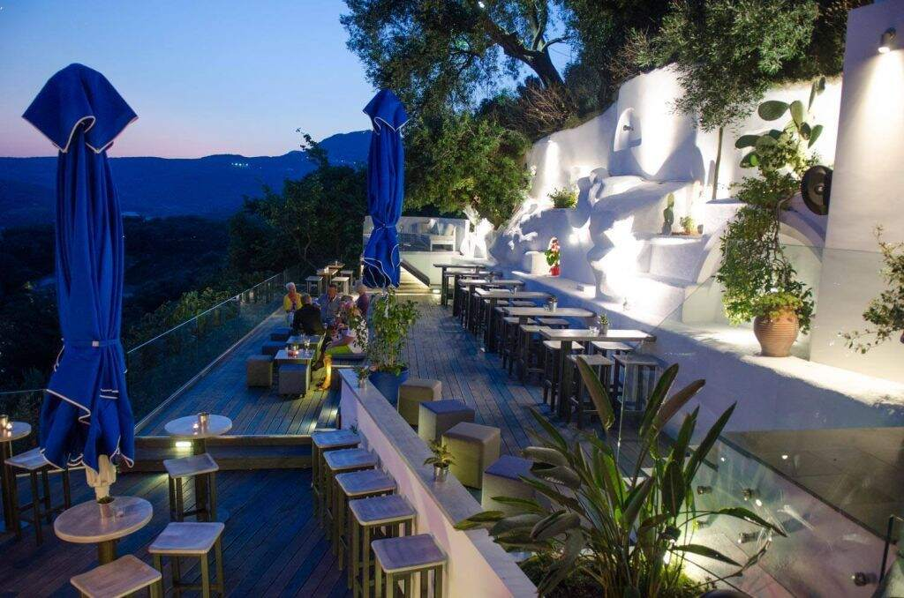
Med Parga Restaurant
Location: Valtos
An amazing restaurant, perched up on a hill from where you can watch both the Venetian Castle and Valtos beach while enjoying your meal. There's somewhat of a romantic or intimate atmosphere around it. You'll find a menu with extensive options, and you'd really miss out if you didn't try one of their
cocktails.
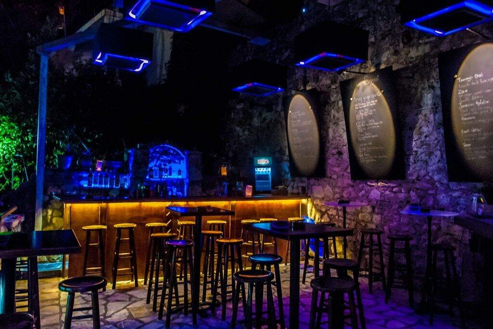
Sail In Bar
Location: Town Beach
This one's for all the party lovers! If you're looking for an unforgettable holiday party experience, definitely try out Sail In. It stays open until the next morning so you can party and dance to your heart's content all night long. They have some really good cocktails and the atmosphere is generally great,
but be aware that it's a relatively expensive place.
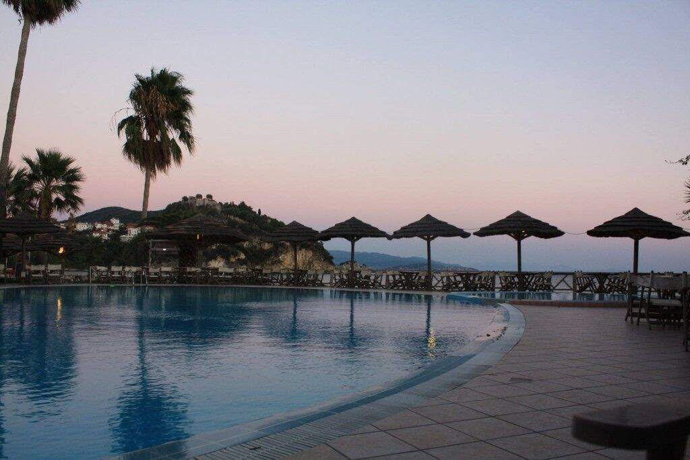
Tango Beach Club
Location: Valtos
Tango Beach Club is a Lounge Bar-Restaurant and the ideal place to spend a relaxing day by the pool enjoying cool fruit juices, coffees, cocktails and much more. It is very suitable for families with kids, as the place has a playground area and baby care facilities. It also offers some great food if you get hungry.
Take a part of Parga back home with you
There's something about Parga's traditional charm that you can take back home with you! You'll find a lot of small shops along the harbour sidewalk that sell all sorts of handmade products and are run by locals. They offer anything from olive oil, Parga's Edem soaps, local dried herbs, quality ceramics to carefully crafted items that would make
perfect gifts for the loved ones back home, like pieces of jewellery, leatherwear, knitwear and embroidery. They carry some of the personality of Parga and buying them is a great way to support the locals and show appreciation for their culture, traditions and craftsmanship. They are generally available at reasonable prices. You'll also find some
fine alcoholic beverages: ouzo, distilled in the area, brandy, cherry liqueurs and kum quat, a traditional corfiot liqueur. Shops are open all day long and stay open even on Sundays.
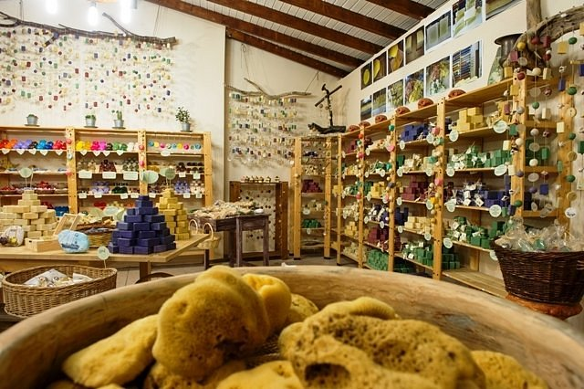
Here's a shop that sells Parga's Edem soap. Edem is a soap lab in Parga. All soaps are hand-made, exclusively with olive oil from the area. The "Cold" method is used for the procedure, which helps maintain all the cosmetic characteristics of the oil. This way, every piece is 100% moisturizing and delays the cell aging. Other significant natural ingredients used for skincare are soda, coconut oil and herbs.
Enjoy watersports and rent a boat !
Parga offers you the opportunity to practice some watersports like waterski or wakeboarding, as well as enjoy many recreational water games and inflatables to ride at the Watermania watersports center, located on the left side of Valtos Beach, under the castle.
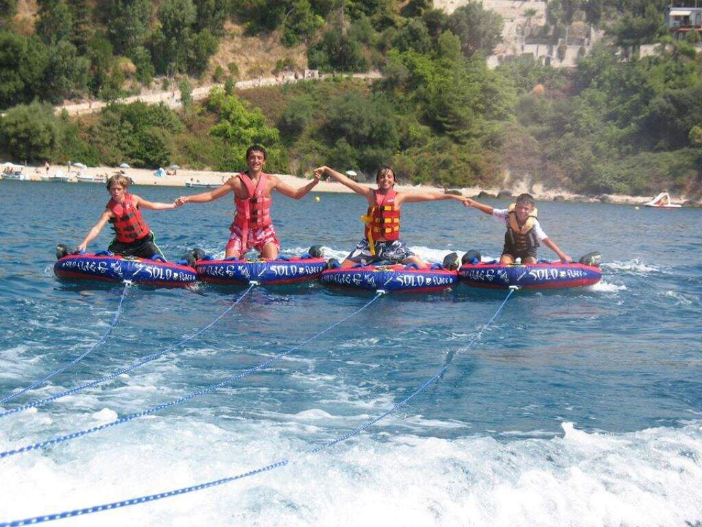
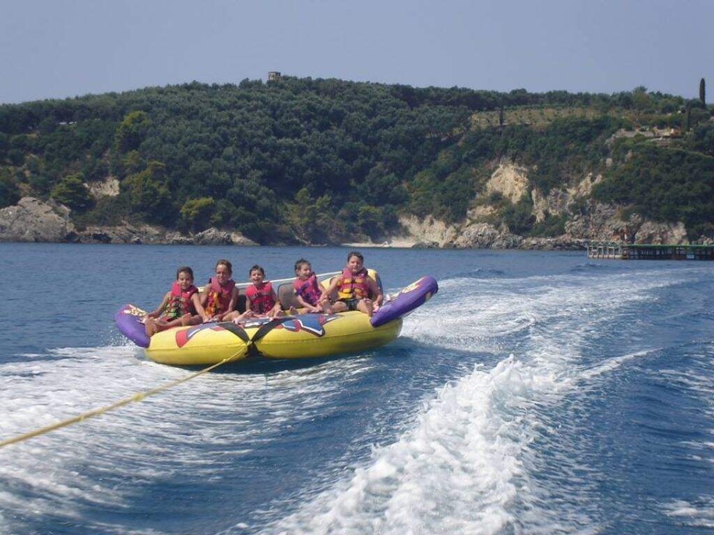
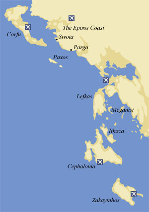
A great idea while visiting Parga is to rent a boat and venture out to nearby islands and points of interest, like Sivota, also known as the "Caribbean of Greece". You can sail to the coves and islets around Sivota, such as Mavro Oros and Agios Nikolaos.
Also, keep in mind that Parga is located relatively close to the Ionian islands, another must-see in Greece. If possible, think about making Parga part of a greater exploration of all the Ionian islands: Corfu, Zakynthos, Kefalonia and Paxi (or Paxos).
Cruise from Corfu to Parga
In case you happen to be in Corfu and would like to check out Parga with this opportunity, there is a one-day cruise departing from Corfu every week and going to Parga, Sivota islands and Blue Lagoon, a bay of fantastic natural beauty. Here's the route the cruise will take:
Departure from port of Corfu Town Igoumenitsa and the small fishing village of Plataria cave of Sivota (boat does NOT stop at the town of Sivota) Parga (boat stops for a few hours and departs in the afternoon)
islands of Sivota Blue Lagoon (boat anchors close to the beach) return to Corfu